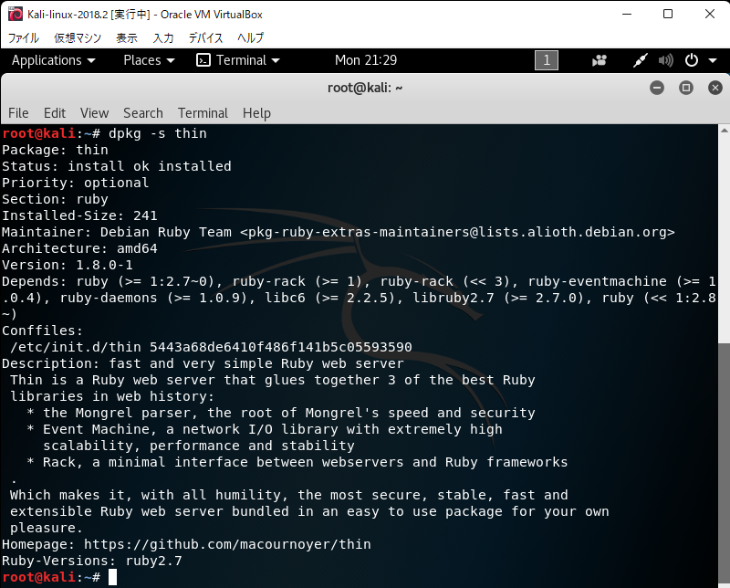

古いバージョンのKali linuxをインストールしようとした
0. はじめに
ハッキング・ラボのつくりかたという本を読み進めていたところ，最新版のKali linux 2021.2では実行できない部分があったので (4章, 252ページ等)，書籍の環境である Kali linux 2018.2に合わせることにした．インストールにかなり苦戦した．
後から気付いたが，apt updateとapt upgradeをしてしまうとmetasploitも更新される．苦労してインストールしたが，同一の環境を作ることが目的であれば，実行しない方が良い．私はこの仮想マシンが翌日にグラフィカルモードで起動しなくなったので，消した．
このようなことは二度としないと思うが，自分への戒めとして，また，もし今後このような状況があったときに備えて記事に残すが，真似はしない方が良い．可能であれば安定起動版か最新版を入れた方が良いし，わざわざ少し古いバージョンを入れて更新するのは手間である．
0.1. 概要
- インストール
- DNSサーバに
8.8.8.8を指定する
- DNSサーバに
- 署名
archive.kali.orgから入手する
- 依存関係
ruby-http-parser.rbの依存関係apt-get installする
thinのエラー/var/lib/dpkg/infoにある該当ファイルを削除して，apt installする
ruby-progressbarのエラーdpkg -i --force-overwriteする
1. Kali linux 2018.2のインストール
ovaがないので，isoファイルをダウンロードする．ここでは，kali-linux-2018.2-amd64.isoを以下からダウンロードした．
あとはVirtualboxで仮想マシンを入れるのと同様にすれば良いが，nameserverに8.8.8.8を指定することを忘れないようにする (名前解決の問題)．
2. インストール後の処理
2.1. 署名
1でインストールしたkali linuxでapt updateしようとすると，“The following signatures were invalid"のエラーが出る．
同様のエラーをStackExchangeで探し，同じように解決しようと試みた．
gpg --keyserver hkp://keys.gnupg.net --recv-key 7D8D0BF6
gpg --fingerprint 7D8D0BF6
gpg -a --export 7D8D0BF6 | apt-key add -
apt update
と
wget -q -O - https://archive.kali.org/archive-key.asc | apt-key add
が紹介されていた．前者でうまくいかなかったので，後者を試した．

2.2. 依存関係
apt updateはできたので，apt upgradeしようとしたところ，ruby-http-parser.rbに依存関係の問題があるらしく，できなかった．

ruby-http-parser.rbをインストールすれば良いかもしれない．

apt-get install ruby-http-parser.rb
を実行したところ，上のapt-listchangesが出力された．末尾まで見てqで進めた．途中に質問されたが，そのまま答えた．


最後まで進めたところ，エラーが出た．

とりあえず，apt-get cleanとapt-get -f installをしてみることにしたが，同じエラーが残っている．

同様のエラーを解決している記事を発見したので，以下の記事のようにしてエラーを解消する．
- 参考
dpkg --audit
dpkg --configure thin

参考サイトによると，/var/lib/dpkg/info以下の関連するファイルを削除すれば良いらしい．
cd /var/lib/dpkg/info
rm -rf thin.postinst thin.postrm thin.prerm

この後に
dpkg --configure thin
をすれば良いらしいが，何故かうまくいかなかった．

仕方ないので，thinをインストールすることにした．
apt install thin

エラーが出なかったので，確認する．
dpkg -s thin

Status install ok installedになっているので，良さそう．
apt updateとapt upgradeを試す．
途中で"Configuring macchanger"と"sslh configuration"について聞かれたが，それぞれ"Yes"と"from inetd"にした．
また，“Configuring base-passwd"というのも聞かれた．今変更しなくても後から変更できるらしいので，“No"を選択した．
またエラーが出たので，原因を探す．とりあえず，apt-get cleanとかを実行する．

“ruby-cms-scanner: “の行から，依存関係の問題があることが分かった．
apt install ruby-progressbar
でインストールしようとしたが，先ほどと同様のエラーが出た．

以下のサイトと類似しているエラーだったので，関連debを上書きインストールする方法を試してみた．
dpkg -i --force-overwrite /var/cache/apt/archives/ruby-progressbar_1.10.1-1_all.deb
apt --fix-broken install
“Configuring postgresql-common"について聞かれたので，“Ok"とした．

いけたように見える．一応apt updateとapt upgradeを確認する．

“not-upgraded"となっているが，一応エラーは消えているようなので，この処理は終了．
2.3. ネットワーク設定
書籍第2章に合わせる．
- アダプター1
- ホストオンリーアダプター
- アダプター2
- NAT
Kali linux 2021.2に10.0.0.2を割り振っているので，Kali linux 2018.2には10.0.0.3を割り振る．

2.4. ユーザの追加
“ai"というユーザを追加する．
useradd -m ai
passwd ai
usermod -a -G sudo ai
chsh -s /bin/bash ai
2.5. ssh環境
(1) SSHホスト鍵の再生成
cd /etc/ssh
mkdir default_keys
mv ssh_host_* default_keys/
dpkg-reconfigure openssh-server
(2) sshdの起動
service ssh start
update-rc.d ssh enable
apt install sysv-rc-conf -y
(3) ログインできるか確認
ローカルから
ssh ai@localhost

Windows側から
ssh ai@10.0.0.3

どちらも接続できている．
(4) rootログインの許可
/etc/ssh/sshd_configを編集して
PermitRootLogin yes
にする．

(5) 公開鍵認証
Windows側で公開鍵があるディレクトリで，
scp .\id_rsa.pub root@10.0.0.3:/root/
とする．
kali linux側で，
cat id_rsa.pub >> ./.ssh/authorized_keys
chmod -R 700 ./.ssh/
chmod -R 600 ./.ssh/authorized_keys
を実行．
/etc/ssh/sshd_configのPubkeyAuthenticationとAuthorizedKeysFileのコメントを外す．
Windows側の.ssh/configに以下を追加．
Host kali_2018
HostName 10.0.0.3
User root
IdentityFile [authorized_keysに対応する秘密鍵のパス]
ssh kali_2018
でログインできることを確認する．
3. まとめ
kali linux 2018.2を導入し，初期設定をした．2018を入れたつもりだが，アップグレードされていた．結局消したが，苦労したので戒めとして残した．真似はしない方が良い．